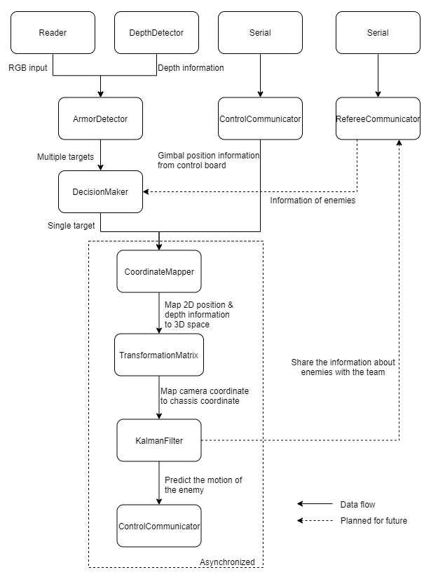

The algorithm team are incharged of two parts: the auto aim system and the sentry AI.
The Auto aim system aims to detect, model, predict enemy armor plate and communicate this information to the control board. 
TODO (Louis)
C++ is the most commonly used language for the algo team. C++ is an Object-Oriented langue widely used due to it’s fast execution time and ease of use. We uses C++ because of those properties, but also various packages available in C++ (ie. ROS, TensorRT, CUDA Kernel).
A strong foundation in C++ is required as all of our implementation work will be in C++. Luckily, resources for learning C++ is widely available.
Ubuntu is a modern operating system derived from a branch of Linux. It is available with and without GUI. We uses Ubuntu as our platform’s OS because it’s the intended platform for ROS.
It is vital that you are familiar with Linux command line interface.
There are various way of setting up an Ubuntu environment. The easiest way would be to utilize the Windows Subsystem for Linux (WSL)
Some of the library we uses interface directly with the hardware, so a Virtual Machine or WSL may cause problem. A dual boot system can guarantee no issue in that regard.
Git is an distributed version control system. Trough out the season, you will collaborate with many others while writing code. Git will allow us to revert our code back to previous changes and enabling multiple people to work on the same repository.
Knowing the basics of Git (commit, push, pull) is mandatory given it’s importance.
CMake is a tool for program compilation and linking. Most of our project utilized multitude of libraries and CMake can to simplify the compile and linking process greatly. It is also an requirement for ROS packages.
OpenCV is a C++ and Python library with various image processing utilities, traditional computer vision techniques, and ML based techniques.
ROS stands for Robotic Operating System. It is an abstraction layer designed to run on Ubuntu. The system facilitate programs (called nodes) running parallel while communicate trough network ports (local or remote).
Using ROS, the program can be highly modularized and expendable.
We are in the process of changing to ROS2, there will be more deities later. If you want to get a head start, install ROS2 Foxy Fitzroy for Ubuntu 20.04.
Termios is a Linux library designed for UART communication while maintaining the simplicity of the C++ System I/O functions.
Here are some note for UART: